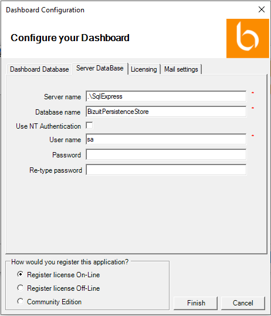

En la pestaña “Server Database”:
- Ingrese el nombre de la instancia de SQL Server donde se instalará la base de datos de persistencia de BIZUIT Server (o donde ya se encuentra instalada)
- Ingrese el nombre de la base de datos de persistencia de BIZUIT Server a utilizar.
- Seleccione la opción “Use NT Authentication” en caso que su servidor de base de datos esté configurado para trabajar con Autenticación de Windows, caso contrario mantenga deseleccionada la opción.
- Solamente si mantuvo deseleccionada la opción “Use NT Authentication”, complete los campos “User name” y “Password” con el nombre de usuario y contraseña respectivamente de un usuario de la instancia de SQL Server ingresada en el campo “Server Name”. En el campo “Re-type password” vuelva a ingresar la contraseña ingresada en el campo “Password”

Anterior / Siguiente